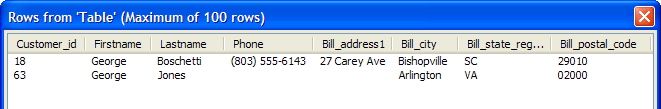

Inserting Records into a Back-End Database
To insert records into a back-end database, you use the SQL INSERT command. The general syntax of the INSERT command is:
|
INSERT INTO tablename (field1, field2, field3....) VALUES (value1, value2, value3....) |
Let us insert a new record into the customer table. First, we will get a count of the number of records in the table. In the Interactive window execute a query to get the number of records in the customer table.
The count(*) function is one of the AlphaDAO Portability Functions. It returns the table's record count. The result set contains one row with one field, which contains the answer. The first field is data(1).
|
dim conn as SQL::Connection dim rs as SQL::ResultSet dim qry as C ? conn.open("{A5API=Access,FileName='C:\Program Files\a5v8\MDBFiles\Alphasports.mdb',UserName='Admin'}") = .T. qry = "select count(*) from customer" conn.Execute(qry) ? conn.ResultSet.data(1) = 62 conn.close() |
The following script inserts a new record and then displays the result set. First, dim variables.
|
dim conn as SQL::Connection dim sql_insert as C dim qry as C dim rs as SQL::ResultSet |
Next, open the connection and define the SQL INSERT command. Note the syntax of the command. The fields that will receive data and the corresponding values are in two comma delimited sets.
|
conn.open("{A5API=Access,FileName='C:\Program Files\a5v8\MDBFiles\Alphasports.mdb',UserName='Admin'}") sql_insert = "insert into customer (firstname, lastname, bill_city, bill_postal_code, bill_state_region) values ('George', 'Jones', 'Arlington', '02000', 'VA')" |
Insert the new record into the table with the .Execute() method.
|
? conn.execute(sql_insert) = .T. |
To view the results, execute a new query and preview the ResultSet.
|
qry = "select * from customer WHERE firstname = 'George'" ? conn.execute(qry) = .T. rs = conn.resultset SQL_ResultSet_Preview(rs) |

Close the connection.
|
conn.close() |
Things of note about this code are:
Note that we did not insert a value into the customer_id field. The reason is that this field was defined as an auto-increment field, which means you cannot assign it a value. Its value is automatically assigned by the back-end database engine.
We did not assign values to all of the fields in the table. In this case, this worked because the fields were not defined as required fields. Had any of the omitted fields been required, the insert would have failed.
Limitations
Desktop applications only.
See Also
Working with SQL Databases, SQL::Connection::Execute()